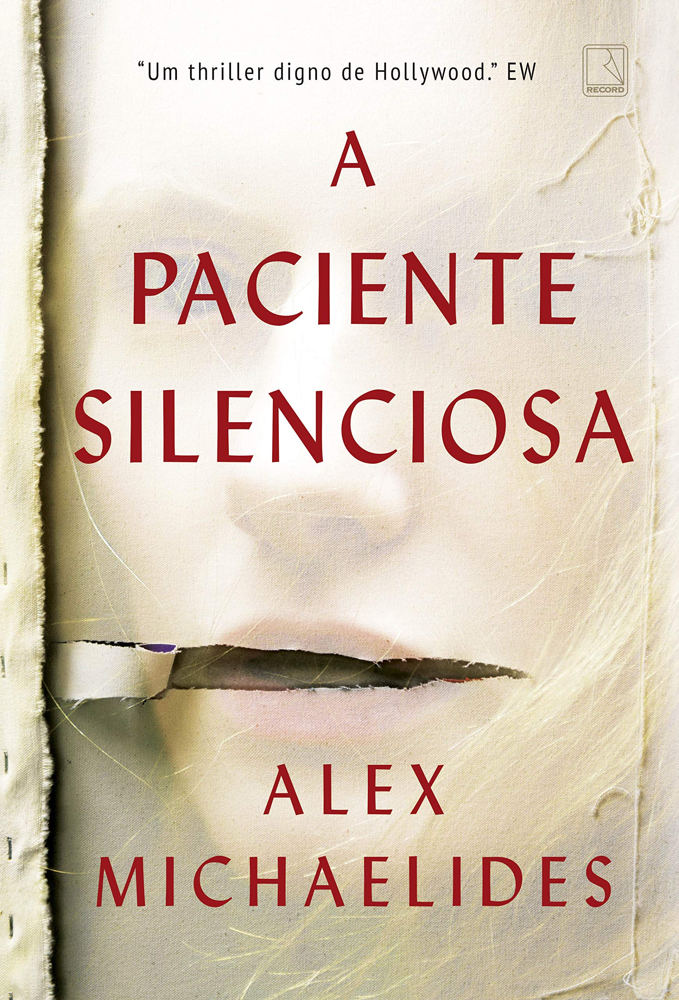
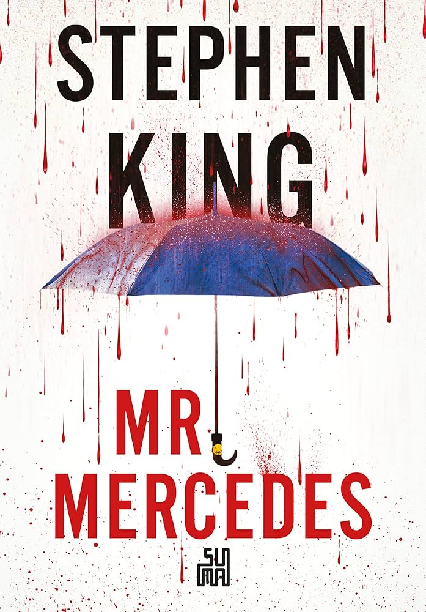
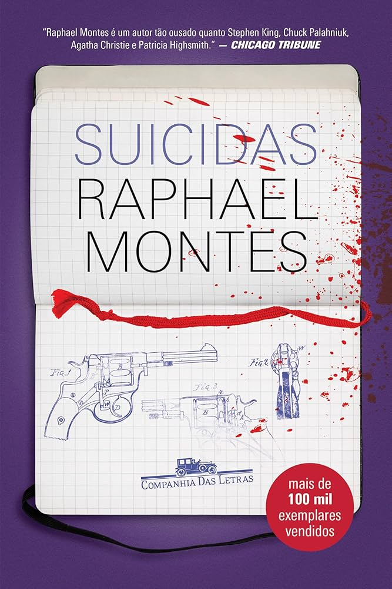

Uma leitura direta e fluida, ideal para quem quer um suspense sem complicação. Mesmo com alguns caminhos previsíveis, consegue surpreender em momentos-chave e manter um bom ritmo até o final. Não é revolucionário, mas cumpre bem o que promete.

Um livro que joga com a sua percepção o tempo inteiro. As teorias vão mudando a cada capítulo, e a sensação de estar sendo enganada faz parte da experiência. Quando tudo finalmente se revela, o impacto é forte — daqueles que fazem você repensar tudo que leu.

Aqui o foco não é só o crime, mas a mente por trás dele. A alternância de perspectivas intensifica a tensão e aproxima o leitor de um vilão perturbador, quase desconfortável de acompanhar. É uma leitura que mistura investigação com um estudo psicológico bem construído, deixando tudo mais denso e envolvente.
Um suspense ágil e fácil de ler, com personagens carismáticos e uma dinâmica que mantém o interesse. Mesmo seguindo um caminho mais previsível em alguns pontos, ainda consegue surpreender aqui e ali. Não é um final arrebatador, mas entrega uma experiência divertida, equilibrando bem drama, romance e mistério.

Uma leitura pesada e inquietante, que mergulha em temas desconfortáveis sem suavizar nada. A narrativa funciona como um quebra-cabeça sombrio, onde cada peça aumenta a tensão até um desfecho marcante. Não é para todo mundo, mas justamente por isso acaba sendo tão difícil de esquecer.